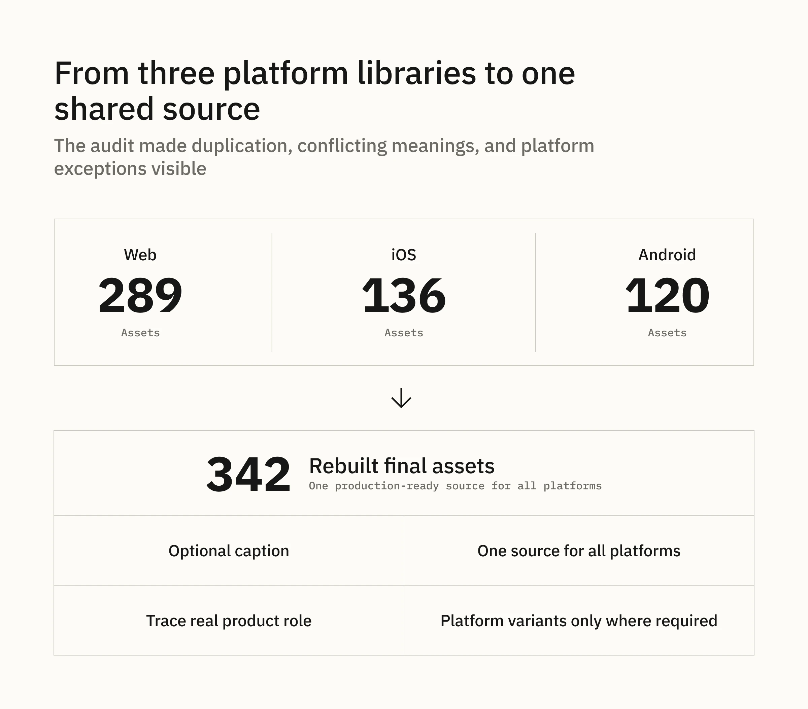
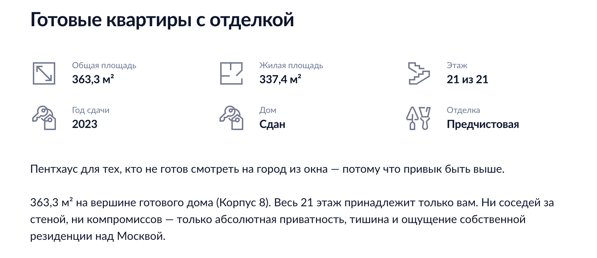
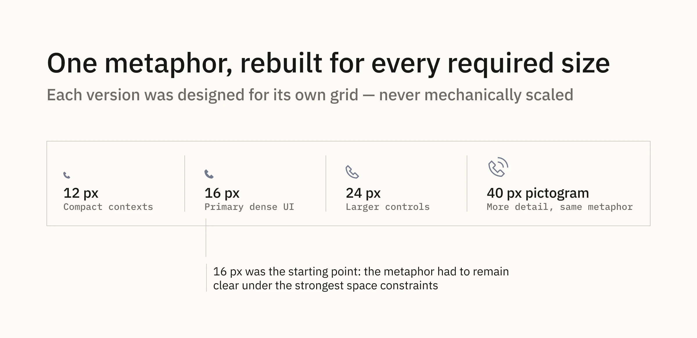
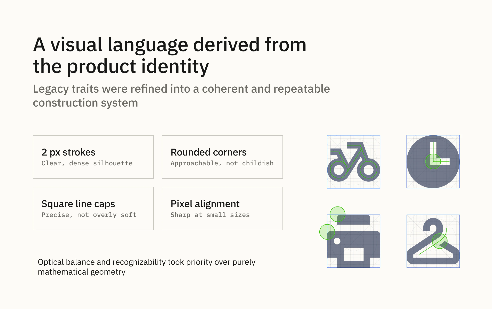
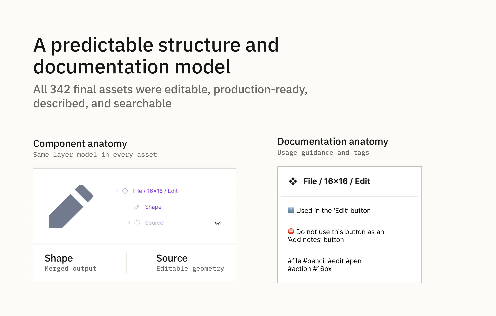
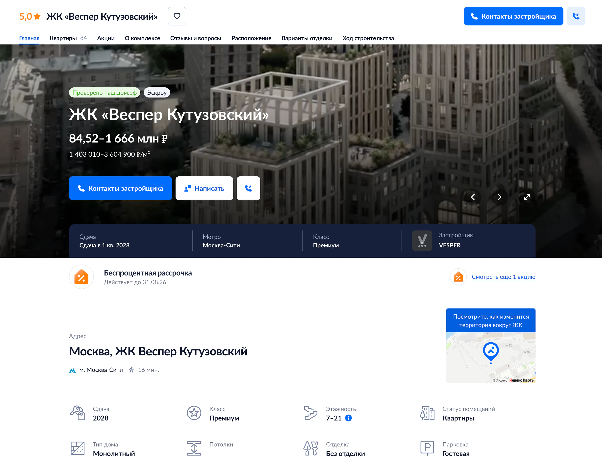
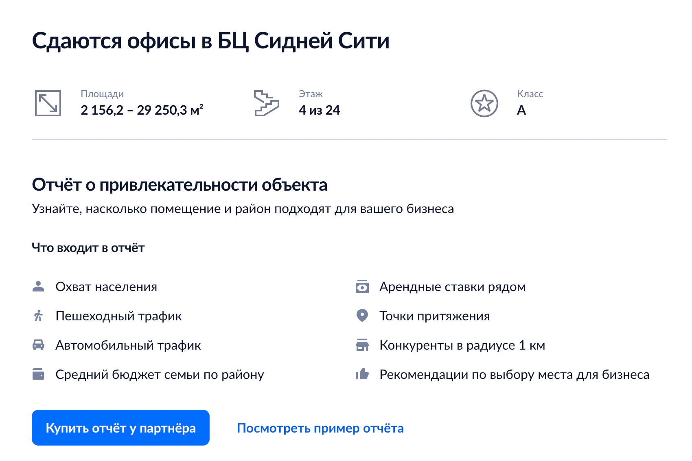
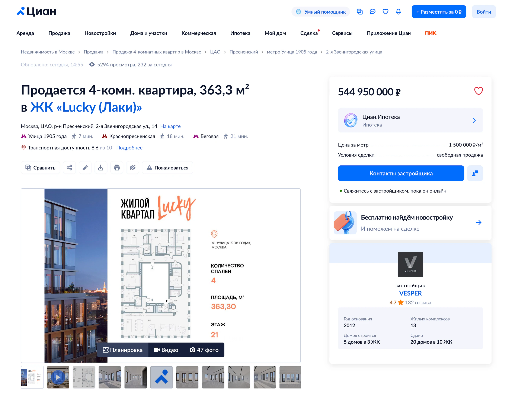

Cian · Design systems · Iconography
Building a Unified Icon System for Cian
I consolidated three fragmented platform libraries into one shared, documented production system—resolving 545 legacy assets into 342 purposeful icons, pictograms, and illustrations.
Summary
Cian’s Web, iOS, and Android products relied on three separate libraries containing 545 assets, with overlapping metaphors, inconsistent naming and sizing, different construction approaches, and no shared visual language.
I consolidated the fragmented system into one shared Figma library of 342 rebuilt and documented assets. I defined its taxonomy, visual language, library architecture, and governance, and personally redesigned or deeply refactored approximately 80–90% of the final library.
My role: Sole Design System Designer leading the strategy, visual direction, library architecture, governance, and final review in collaboration with product designers and platform teams.
545 → 342 assets · 3 platform libraries → 1 shared source · Cross-platform features: 3 icons → usually 1 · 80–90% personally redesigned

1. Auditing 545 fragmented assets
The legacy libraries had evolved independently:
- 289 Web assets
- 136 iOS assets
- 120 Android assets
We brought all assets into one audit space. I compared them by form, naming, and product role, and traced unclear meanings through product designers and leads.
This separated true duplicates from visually similar assets with different roles. I simplified outdated or ambiguous metaphors and standardized shared metaphors across platforms, retaining exceptions only when platform conventions mattered, such as sharing on iOS and Android.
2. Defining the new icon system
The existing libraries mixed interface icons, pictograms, and illustrations without a clear distinction. I introduced a shared taxonomy:
- Icons: 12×12, 16×16, and 24×24 px
- Pictograms: 40×40 px
- Illustrations: assets larger than 40×40 px
Dense, information-rich interfaces had already made 16 px the primary size. I formalized that convention as the foundation of the new system.
Decision: preserve size-specific roles instead of forcing scalability
Each size served a distinct product role, so I designed the required versions as purpose-built assets rather than mechanically scaling one master icon:
- 12 px — separately simplified for exceptional compact scenarios where reducing a 16 px asset would damage legibility and negative space;
- 16 px — the primary interface size, largely filled and optimized for dense, information-rich layouts;
- 24 px — mostly outlined and used in mobile interfaces or more prominent Web product scenarios rather than standard compact components.
This increased manual work, but preserved clarity at 100% scale and respected the interaction patterns already embedded across the products.
Redefining these roles would have required changes to component and product architecture on all three platforms. For the first iteration, I formalized and improved the existing model rather than replacing it prematurely.
The system unified visual language and construction rules without erasing meaningful size-specific roles.

24 px outline icons used for prominent property attributes rather than dense controls.
Shared visual language
From the legacy sets and Cian’s logo and interface typeface, I derived a style that balanced softness and precision:
- rounded corners made the icons more approachable;
- square line caps prevented the style from becoming overly soft or playful;
- mostly 2 px strokes created a clear, dense silhouette;
- pixel-grid alignment kept small assets sharp;
- optical balancing compensated for different silhouette shapes;
- shared rules controlled intersections, negative space, and crossed-out states.
I reviewed the approach with product designers and leads, incorporated relevant feedback, and retained final visual responsibility.


3. Rebuilding and documenting the library
Visual consistency alone would not solve maintenance and discoverability. I standardized both the structure of every asset and its attached guidance.
A predictable component structure
Each of the 342 final assets followed the same model:
- Shape — a merged, production-ready form used for export and recoloring;
- Source — a hidden group containing the editable construction shapes.
This made every asset predictable to inspect, recolor, export, edit, and reuse.
Naming and taxonomy
Icons used Category / Size / Name—for example, Action / 16×16 / ArrowDown. Pictograms used Pictograms / Category / Name.
Names described the visible symbol rather than a single product scenario, keeping metaphors reusable across contexts.
Usage guidance and bilingual search
Every final asset received:
- an explanation of its intended product context;
- clarification where similar assets could be confused;
- Russian search tags;
- English search tags.
When usage could not be inferred from the symbol, I consulted product designers and leads, then standardized the resulting terminology and documentation across the library.

4. Migrating one system across three platforms
Decision: one shared source instead of three platform libraries
Product designers previously had to identify which platform library contained the right metaphor, while the same cross-platform feature could require three separately maintained Web, iOS, and Android assets.
I replaced this model with one shared Figma library accessible to every product team. The full metaphor set could now be searched, reviewed, documented, updated, and extended in one place.
For most cross-platform features, the default changed from three platform-specific icons to one shared asset. I retained a second variant only when a familiar platform convention materially improved recognition, such as platform-specific sharing patterns.
One shared source became the default; platform variants became justified exceptions.
Confirmed outcomes
- Three platform libraries were replaced with one shared Figma source.
- All product designers moved to the shared system.
- All 342 final assets were reviewed, rebuilt, structured, described, and tagged.
- iOS completed the icon replacement before I left the company.
- The redesigned system was subsequently implemented in the live Web product.
Implemented in production
The system was not limited to the design library. The shared icon language appeared across live product surfaces, including residential-complex pages, listing-detail pages, and commercial scenarios. These examples show the same system operating across different product contexts and information densities.

Residential-complex page — the same system used across a broader product surface.

Commercial scenario — shared metaphors reused beyond residential flows.

Listing-detail page — shared icons used across dense metadata, actions, and supporting modules.
I left shortly after launch, so I do not claim post-launch efficiency metrics. The confirmed impact is a completed migration to one shared visual language, library architecture, and production model.
Trade-offs
We produced only the sizes required by real scenarios and retained rare platform-specific variants where familiarity outweighed uniformity.
The result was not only a unified visual style, but a maintainable production system for creating, finding, and governing visual assets.
Reflection
The hardest part was resolving ownership, meaning, and exceptions across products—not drawing individual icons. The project changed how I approach visual-system work: consistency only becomes sustainable when taxonomy, construction rules, documentation, governance, and migration are designed together. In a future iteration, I would define adoption checkpoints and usage analytics earlier so that search efficiency and migration progress could be measured after launch.